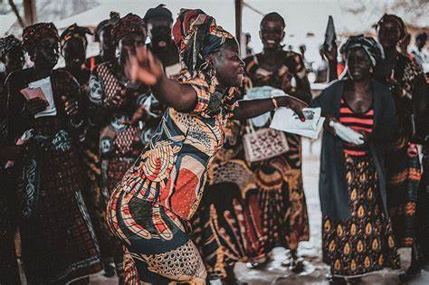
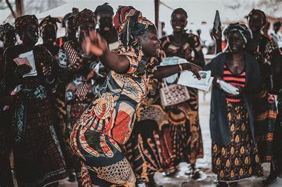
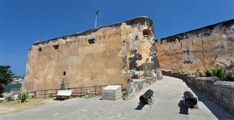

Discover the Rich Heritage of Kenya
Explore Kenya's cultural, historical, and natural heritage that makes it a unique and a vibrant destination.
Cultural Heritage
Kenya has over 40 ethnic groups, each with its own languages, customs, music, dance, and clothing styles. This diversity is celebrated through traditional practices, like Maasai beadwork, Kikuyu songs, Swahili poetry, and Luhya dances.
 

Ethnic Groups and Languages
| Ethnic Group | Primary Language |
|---|---|
| Maasai | Maasai |
| Kikuyu | Kikuyu |
| Luhya | Luhya |
| Kalenjin | Kalenjin |
Historical Heritage
Kenya has numerous historic sites, including ancient coastal cities like Lamu, Fort Jesus in Mombasa, and prehistoric sites like Olorgesailie and the Koobi Fora fossil site. These sites provide insight into Kenya's history, from early human ancestors to colonial and post-colonial times.
Natural Heritage
Known for its stunning landscapes and wildlife, Kenya has many national parks and reserves like the Maasai Mara, Amboseli, and Tsavo, which are home to the "Big Five" and other wildlife. Mount Kenya, a UNESCO World Heritage Site, and Lake Turkana, famous for its fossils, are also key parts of Kenya’s natural heritage.

Kenya's heritage is a source of pride, connecting Kenyans to their ancestors and offering cultural and natural attractions that draw visitors from around the world.